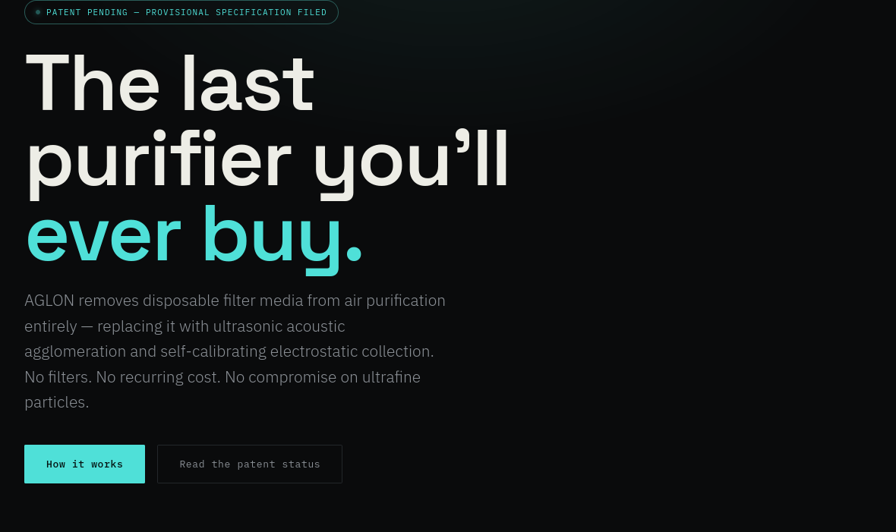

AGLON
Filterless air purification — ultrasonic acoustic agglomeration and self-calibrating electrostatic collection, designed to remove disposable filter media from air purification entirely.

A note on status: the project's own site currently shows conflicting language between a header banner ("patent pending") and its IP section ("drafted — pending filing"). The accurate status is: a provisional patent specification has been drafted and is not yet filed. No patent has been granted. No commercial-scale validation exists. This is engineering documentation, not a manufactured product. CORE PROBLEMHEPA filter media has been the default in air purification for four decades — not because it's the best solution, but because nothing replaced it. Three structural costs come with every filter-based device sold today.
360° Intake & Bipolar Ionization
Air enters through a perforated grille on all four sides of the base. A needle-point electrode array charges incoming particles via a localized corona field — chosen over wire ionization specifically to suppress ozone at the source.Ozone-minimizing by design
Ultrasonic Agglomeration Chamber
Eight piezoelectric transducers in two opposing arrays generate standing acoustic waves at 40kHz inside a resonant chamber sized to wavelength multiples. A labyrinth baffle path extends particle dwell time roughly 4×, forcing sub-micron particles to cluster into agglomerates large enough to capture.Core novel mechanism
Self-Calibrating Drive Circuit
Transducers vary batch-to-batch and drift with heat and age. The drive circuit sweeps at startup to find the real resonant peak of the installed array and locks to it — no factory tuning, no performance loss over the device's lifetime.Patent claim
Electrostatic Collection Plates
Seven parallel anodized aluminum plates, spaced 6mm apart, capture charged agglomerated clusters. Grooved surfaces slow fouling; a capacitance sensor detects buildup and triggers a cleaning alert.Washable — no consumable
Catalytic Ozone Decomposition
A manganese dioxide–coated mesh passively converts residual ozone back into oxygen at room temperature — no power draw, multi-year catalytic lifespan.Passive, zero-power
UV-C Sterilization
LEDs irradiate captured material directly on the plates rather than air in transit — exposure time is continuous instead of the fraction of a second airflow allows.Stationary-target UV-C
Designing a six-stage physical system from first principles — without lab access — forces you to be honest about what's proven with math and datasheets versus what still needs bench testing. The self-calibrating drive circuit (Stage 03) came directly out of realizing that fixed-frequency tuning would fail the moment a transducer aged or a batch varied.
NEXT STEPBench-testing the acoustic agglomeration claim physically, and deciding whether to file the provisional specification within the priority window.